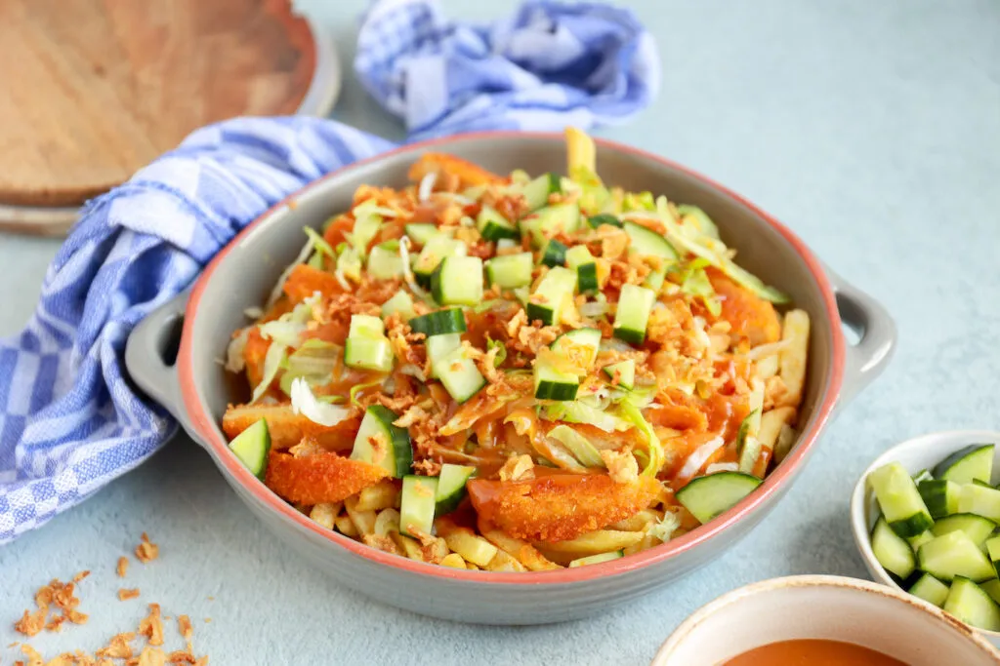

Kipkapsalon met sate

Lekker en simpel, kip kapsalon met sate
Ingredienten 2 personen
- 500gr friet
- 200 gram kipfilet of kipburgers
- komkommer
- 100gr ijsbergsla
- 25gr gebakken uitjes
- 2tl paprikapoeder
- 0.5tl cayennepoeder
- peper en zout
- 3el pindakaas
- 125ml water/kokosmelk
- 1tl sambal
- 2 theelepel bruine bastardsuiker
- 2 theelepel ketjap manis
- limoensap
Bereiding
- Bak de kip gaar en breng op smaak met paprikapoeder en cayennepoeder
- Bak de friet
- Snij de kokokommer in kleine blokjes
- Verdeel de frietjes over een ovenschaal met wat peper en zout
- Strooi de kip hierboven op
- verdeel nu de sla komkommer satesaus en gebakken uitjes er boven op
- Klaar
zelfgemaakte satesaus
- Zet pannentje op vuur met 125ml kokosmelk
- voeg 3 eetlepels pindakaas toe en roer tot pindakaas gesmolten is
- voeg daarna 1tl sambal, 2tl bastardsuiker, 2el ketjap manis toe, en scheutje limoensap
- Breng het op smaak door iets meer te gebruiken of juist minder
Back to top of page
back to homepage